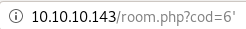
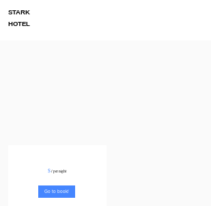
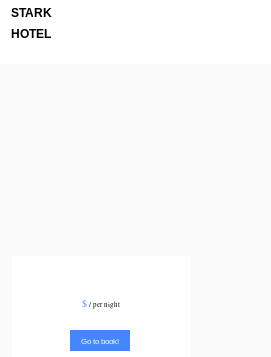

- nmapAutomator
- gobuster
- initial foothold
- manual sqlinjection (Blind SQL injection)
- Error based Blind SQL Injection
- revshell.php
- Exploit the SQL injection to add php code into a file on the system
- reverse shell
- sqlmap
- privesc to pepper
- privesc to root
- user/root
- lessons learned
manual sqlinjection (Blind SQL injection)
since we have reason to believe the webserver is talking to a mysql backend (hotel reservation website with hotel rooms, prices etc), we can verify our suspicions through a variety of different Blind SQL injections and see how the webserver respondsfirst ,we can check whether or not the sql query has valid imput sanitation/vallidation by adding a single quote ' to see if the sql query breaks
we know
returns the superior family room

but if we were to add a single quote '

ir breaks the internal sql query, meaning there is NO input validation or sanitation (through single quote escapes)

for sql enumeration to be the most effective, it is crucial to find out how many columns the database is using for our blind SQL injection, because otherwise our injection will not output correctly if at all. Luckily enough a simple way to find out how many columns this database has is to simply increment a Union SELECT statement and see if the webpage spits out anything interesting from the backend database
to find out the exact number of colums, we'll keep adding column numbers to our mysql query until the database comes back with a non-error so
union select 1
union select 1,2
union select 1,2,3
union select 1,2,3,4
union select 1,2,3,4,5
union select 1,2,3,4,5,6
all show empty server responses

BUT
/room.php?cod=9999 union select 1,2,3,4,5,6,7


bingo! because the webserver is spitting out a bunch of random outputs that make no sense, we know our webserver has issued a valid mysql statement on the database as well as the fact that the database has 7 columns
now comes the fun part!